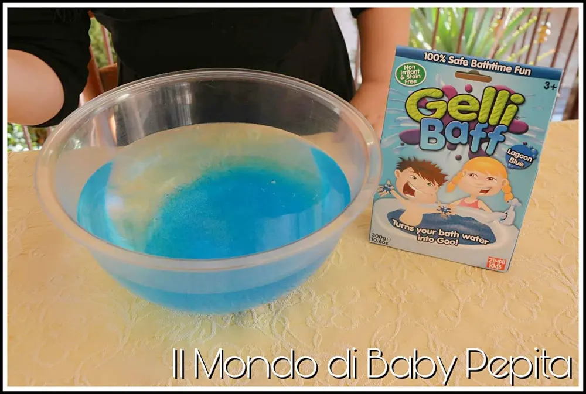
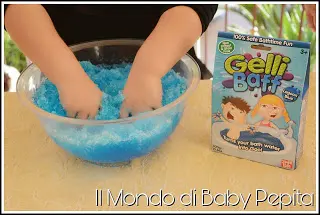
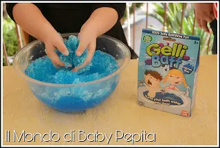
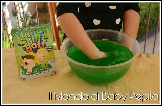
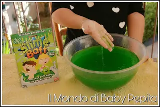
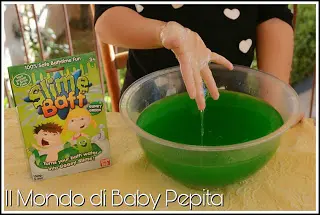

Giochi: Gelli Baff & Slime Baff da ZIMPLI KIDS
Giochi: Oggi torniamo bambini e parliamo di un prodotto del tutto dedicato ai piccoli.
Un prodotto non italiano e che già da anni progettano e producono giochi per bambini.
Si impegnano a creare sempre cose innovative e creative per il divertento ma anche per insegnare nuove cose ai nostri piccoli, infatti loro dico:
"I nostri prodotti non sono giocattoli, sono esperienze".
Quindi cercando di rendere partecipe i bambini educandoli nei giochi.

L'azienda ZIMPLI KIDS, dunque mi ha gentilmente inviato il prodotto che stanno promuovendo in questo periodo, ossia GELLI BAFF & SLIME BAFF. Sono giochi che si fanno con l'acqua per insegnare le diverse consistenze che assumono. Ovvero, il GELLI BAFF ti permette di trasformare l'acqua in granita come?
■ aggiungere acqua tiepida in un recipiente
■ aggiungere la polvere

Mescolare finché non diventa compatta e vediamo che assume la forma di acqua con ghiaccio (che ovviamente il ghiaccio non c'è) ma sembra davvero granulosa dall'aspetto soffice.


Lo SLIME BAFF invece, ha lo stesso procedimento ma dopo aver mescolato per un bel pò, questa polvere richiede qualche minuto in più per assumere un aspetto più solido.
Dopo una decina di minuti a mescolare via via noteremo che l'acqua non è solo verde e liscia tra le mani, ma bensì diventa un pò viscida. Più passa il tempo e più vedremo che diventerà in una specie di melma o, come ha dato l'impressione a me, come la saliva di dinosauro.



Un prodotto carino per passare il tempo con i bambini, sul sito dice di poterlo usare anche durante il bagnetto dei nostri bambini ma io personalmente lo sconsiglio.
Meglio farli giocare solo con le mani in un recipiente e farli capire le differenze tra le varie forme che assumono.
Qui sotto vi posto il video che vi mostrerà il procedimento e vi farà vedere come diventano.